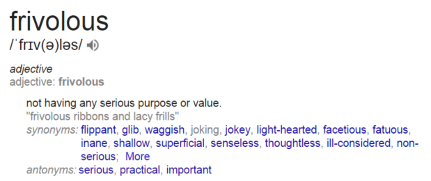

Frivolous things
Reading this article about the limited scope of dress for female academics made me think a bit about what it means for something to be frivolous.
When I was 13, I felt very sure that I knew what frivolous was. It was Final Fantasy X-2, to my teenage mind an irredeemable sacrilege of a sequel to the bestest and most amazingest game of all time. Final Fantasy X was a game about love, dreams and the cultural consequences of giant invincible flying doom monsters. X-2 seemed to involve a lot of pop singing and girls in fancy dresses.
Shortly thereafter I discovered my sexuality and spent a few years semi-closeted trying to be more bi than I was. I had no direct objection to being attracted to guys, or even much of an interest in masculinity. I just really didn't want to be seen as frivolous, and I associated that with being openly gay.
You might notice that what we're calling frivolous is really just cultural femininity. The google dictionary definition will even use it in a sentence for you, denouncing the evils of ribbons and frills:

At some point I realized how extremely selective and specific this is. It just so happens that frills are frivolous and not, say, neckties? No impartial analysis of the distribution of human attention would ever come to the conclusion that the most serious distraction is how much effort they put into wearing ribbons!
The true waste was all that worrying about whether things were frivolous or not and whether I might be perceived as such. If a woman wears a bright blue top instead of a grey one, she has expended nobody's time and energy in doing so. When a potential employer lowers their estimations of her professional ability as a result, and fails to hire her into a position for which she is ideal? A huge amount of everyone's time and energy has been wasted! It's absurdly inefficient!
In this sense, people who engage in unusual and colorful self-expression are doing something extremely socially important. They're challenging norms and standards of behavior which are distractingly frivolous. Perhaps once they are dispensed with we can all get on with doing fun and interesting stuff!